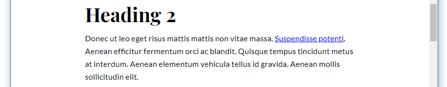
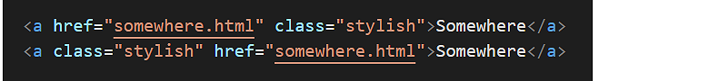
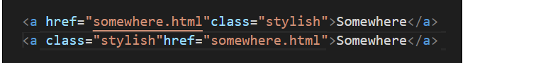
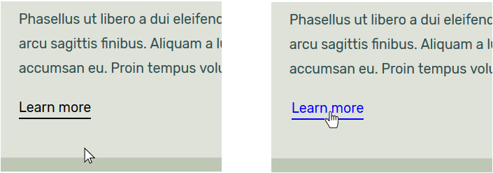

Hyperlinks, or more simply links, enable users to click or tap their way from one web page to another web page, and from one website to another website.
In the next Tutorial, Working with Internal Hyperlinks, you will learn how you can also use hyperlinks to go from one section of a web page to another.
The general format of a hyperlink in HTML is as shown below.
Note the following:
A hyperlink begins with an opening <a> (for ‘anchor’) tag.
Hyperlinks end with the closing </a> tag.
Inside the opening <a> tag is the href attribute that is followed by an equal to sign (=).
The href attribute holds, within quotation marks, the link destination.
This is the location to where the user will be taken when they click or tap on the link.
The above HTML tag would produce the following result.
This is an example of a hyperlink placed around an item of text. In this case, the word ‘here’.
Hyperlinks can also be placed around an image, as follows.
<p>Please click on the picture of a cat below.</p>
<ahref="webpage.html"><imgsrc="cat.jpg"alt="cat"></a>
This second example would produce the following result.
Hyperlinks: same or different website?
One way of looking at hyperlinks is to ask: what is the destination of the link? Where will it send the user to?
In terms of their destination, you can think of hyperlinks as of two types:
Hyperlinks with absolute URLs
An absolute URL contains the full address of the web page being linked to, and begins with the http:// or https:// protocol.
Absolute URLs will always include the website name and typically also the name of a particular web page and perhaps too the folder that contains it.
You use absolute URLs when you want to link from one website to a different website – that is, to a website with a different domain name.
Hyperlinks with relative URLs
If you are linking between web pages of the same website, you do not need to include the http:// or https:// protocol or the website domain name.
It is enough to enter only the web page name, such as: services.html
or privacy-statement.html
And perhaps also the folder that contains the web page, such as products/shoes.html
or services/financial/insurance.html
For example, the relative hyperlink below will take the user to a different page within the same folder of the same website.
<p>Read about our <ahref="about-us.html">team members</a>.</p>
You will commonly see relative hyperlinks used in navigation menus that can lead users to the various pages of a website.
Hyperlinks: same or new web browser tab?
You can choose to display a linked-to (‘destination’) web page in the same or in a new tab of your web browser.
Consider the example of a web page named page-1.html that contains a hyperlink to a second web page named page-2.html.
New page, same browser tab
In the first case below, the linked-to web page named page-2.html replaces the current page-1.html web page in the user’s web browser tab.
In the page-1.html web page, the HTML link code would be as follows:
<p>Click to go to <ahref="page-2.html">Page 2</a>.</p>
New page, new browser tab
In the second case below, the linked-to page-2.html web page opens in a new tab of the user’s web browser. The original page is still displayed in the linked-from web browser tab.
In the page-1.html web page, the HTML code for this open in a new tab link would be as follows:
<p>Click to go to <ahref="page-2.html"target="_blank">Page 2</a>.</p>
Your hyperlink now has two attributes:
The href attribute value contains the destination of the hyperlink.
The target=_blank attribute forces the new page to open in a new browser tab.
The order of two attributes inside the opening tag of a hyperlink does not matter.
For example, both of these hyperlinks are correct.
But ensure you separate the two attributes from each other by a single space. For example, both these hyperlinks are correct. And for the same reason.
Preventing web page hijacking
When you open a hyperlink in a new tab of your web browser, JavaScript code in the new web page is able to take control of the original web page that you linked from.
For this reason, a third attribute of rel="noopener" is a widely-used security feature that is added to hyperlinks that include the target=_blank attribute.
In Visual Studio Code, open the following two files:
page-5.html style-5.css
Your first task is to make the web page responsive by using media queries and fluid font sizes.
At the top of the page-5.css stylesheet, replace the current web browser resets by copying-and-pasting the following:
/* ============= WEB BROWSER RESETS ============ */* { margin: 0; padding: 0; border: none }
html { height: 100% }
body { min-height: 100%; max-width: 1600px; margin-left: auto; margin-right: auto }
img { width: 100%; height: auto; display: block }
Under the web browser resets, replace the current body styles with the following:
/* ========== PAGE CONTAINER ========= *//* All screen sizes */body { background-color: #FFFFBD }
/* Desktops */@mediaall and (min-width: 768px) { body { padding: 4% 20% } }
/* Mobiles */@mediaall and (max-width: 767px) { body { padding: 11% 9% } }
Next, you will update the font sizes of the web page content.
For the h1 main heading selector, update the font-style property from the fixed value of 84px by copying-and-pasting this fluid value:
For the h2 sub-heading selector used to style the introduction text, update the font-style property from the fixed value of 26px by copying-and-pasting this fluid value:
And for the text paragraphs styled with the p selector, update the font-style property from the fixed value of 22px by copying-and-pasting this fluid value:
Save your web page and view the result in your browser. Click the four hyperlinks to ensure they all work correctly.
Finally, add these two attributes inside each of the four opening hyperlink tags:
target="_blank" rel="noopener"
Ensure you enter a single space between the attributes in your hyperlink opening tags.
Save your web page and, in your web browser, verify the four hyperlinks all work correctly.
The five hyperlink states
Hyperlinks have four possible states. They are as follows:
Unvisited: The link has not been clicked (desktop/laptop display) or tapped (tablet/mobile display) by the user.
By default, web browsers display unvisited hyperlinks in the colour blue.
Visited: The link has been previously clicked/tapped by the user.
By default, web browsers display visited hyperlinks in the colour purple.
Hover: The user is hovering the mouse over the link (desktop and laptop screens only).
By default, web browsers display hovered-over links in blue (if not previously visited) and purple (if visited before by the user).
Active: The link is currently been clicked/tapped by the user.
By default, web browsers show active hyperlinks in the colour red.
Note that, by default, all four hyperlink states are highlighted with an underline. Web browsers achieve this effect by automatically assigning the following CSS rule:
Except for the special cases of hyperlinks in menus and as buttons, it is good practice to underline the visited and unvisited states of hyperlinks within blocks of text.
You can use CSS rules to control the appearance of hyperlinks. In most cases, it is enough to style the links for just two cases:
Visited and unvisited links. For example:
a:link, a:visited { color: blue }
Hovered-over and active links. For example:
a:hover, a:active { text-decoration: darkblue }
Styling hyperlinks
In this next section of the Tutorial, you will apply some CSS styles to a hyperlink that is positioned within a block of paragraph text.
In your text editor, open the base-8.html web page.
In the paragraph text under the first <h2> sub-heading, add a hyperlink as shown below.
<h2>Heading 2</h2>
<p>Donec ut leo eget risus mattis mattis non vitae massa. <ahref="https://www.ibat.ie">Suspendisse potenti</a>. Aenean efficitur fermentum orci ac blandit. Quisque tempus tincidunt metus at interdum. Aenean elementum vehicula tellus id gravida. Aenean mollis sollicitudin elit.</p>
Save the web page and view the result in your web browser. Verify that the hyperlink works correctly.

Next, you will create a new class for the styled hyperlink and name it 'fancy-link.'
In your base-8.html file, edit the hyperlink as follows:
In your text editor, switch to your base-8.css stylesheet. Before the /* ==== TEXT BOXES ==== */ section, add the following new CSS class, with CSS properties and values for all four possible states of the hyperlink.
Save both your stylesheet and web page, and view the result in your web browser. It should look as shown below.
Note the following:
The text-decoration: none rule removes the default underline from the hyperlink.
The color:inherit rule replaces the default hyperlink colour(s) with the colour of the surrounding text paragraph.
In place of the default underline, the two bottom-border rules add a solid, 2-pixel thick border under the hyperlink.
The padding-bottom value adds some vertical space between the hyperlinked text and the bottom border of the button.
The final step is to add some colours to the hyperlink: one colour for the 'link' and 'visited' states, and a second colour for the 'hover' and 'active' states.
a.fancy-link:link,
a.fancy-link:visited { border-bottom-color: blue }
a.fancy-link:hover,
a.fancy-link:active { color: red; border-bottom-color: red }
Save your stylesheet and view the result in your web browser. It should look as shown below.
Styling links on your first sample web page
In this section you will apply CSS styles to the hyperlinks you added to the page-5.html sample web page earlier in this Tutorial.
In VS Code, in the page-5.html web page, add the following class to each of the hyperlinks directly under the four images.
class="fancy-link"
You can add a class name anywhere within the opening tag of a hyperlink. Ensure you separate it from the hyperlink attributes by a single space.
For example, both of these are correct.

But both of these are incorrect. And for the same reason.

There is no space between the href attribute and the class.
Display the style-5.css stylesheet.
At the bottom of the stylesheet flle, copy-and-paste the following:
/* ====== FANCY HYPERLINKS ====== *//* Passive link styles */a.fancy-link:link, a.fancy-link:visited {
text-decoration: none;
padding-bottom: 2px;
}
/* Active link styles */a.fancy-link:focus, a.fancy-link:hover, a.fancy-link:active {
text-decoration: none;
padding-bottom: 2px;
}
You have now set up a selector for the .fancy-link class, grouped the five possible hyperlink states into two categories for styling, and removed the default underline.
You have also added a spacing of 2px that will seperate the hyperlink text from whatever bottom border you place underneath it.
For the first set of style rules that apply to the :link and :visited hyperlink states, enter the following CSS properties and values:
color: #000;
border-bottom: solid 2px #000;
For the second set of style rules that apply to three active states of the hyperlink, enter the following CSS properties and values:
color: #f26f21;
border-bottom: solid 2px blue;
Save your stylesheet. Display the web page in your browser and verify the style changes to the four hyperlinks.
You are now finished working on your first sample web page.
Click page-5.html to view a finished sample of this web page in a new tab of your web browser.
Styling links on a second sample web page
In this section you will add and apply CSS styles to the hyperlinks on a web page your created previously.
You will work with the page-10.html web page and style-10.css stylesheet in yourr websites folder.
In VS Code, open the page-10.html and style-10.css files.
In the page-10.html web page, directly under the last paragraph in each of the four sections (after the introduction), copy-and-paste the following paragraph that contains an empty hyperlink:
<p><aclass=fancy-link"href="#">Learn more</a></p>
Save your web page and, in your web browser, verify that the four sections end wuth a hyperlink displayed in the default style.
In this exercise, we are concerned only with the styles of the hyperlinks, not with their destination. If you click any of these four links you hae aded, the web page will simply reload in the browser.
In VS Code, display the style-10.css stylesheet.
At the bottom of the stylesheet flle, copy-and-paste the following:
/* ====== FANCY HYPERLINKS ====== *//* Passive link styles */a.fancy-link:link, a.fancy-link:visited {
text-decoration: none;
padding-bottom: 3px;
}
/* Active link styles */a.fancy-link:focus, a.fancy-link:hover, a.fancy-link:active {
text-decoration: none;
padding-bottom: 3px;
}
You have now set up a selector for the .fancy-link class, grouped the five possible hyperlink states into two categories for styling, and removed the default underline.
You have also added a spacing of 3px that will seperate the hyperlink text from whatever bottom border you place underneath it.
For the first set of style rules that apply to the :link and :visited hyperlink states, enter the following CSS properties and values:
color: #000;
border-bottom: solid 2px #000;
For the second set of style rules that apply to three active states of the hyperlink, enter the following CSS properties and values:
color: blue;
border-bottom: solid 2px blue;
Save your stylesheet. Display the web page in your browser and verify the style changes to the four hyperlinks.

Let’s add two further style updates to the hyperlinks on the web page.
In VS Code, display the page-10.html file.
For each of the four hyperlinks, add the following HTML character code which represents a right-arrow at the end of ‘Learn more’ text. Enter a single space after the text and before the character:
→
Such character codes always end with a semi-colon (;).
You will find a complete list of HTMl character codes at the website below.
A delightful reference for HTML Symbols, Entities and ASCII Character Codes
Display the style-10.css file.
To the style rules for the passive states of the .fancy-link selector, add the following new CSS property and value:
transition: all 0.2s linear;
This adds a smooth transition effect as your hyperlinks change from their passive to active states and vice versa.
Save your web page and stylesheet, and verify your updates display and work correctly.
You are now finished working on your second sample web page.
Click page-10.html to view a finished sample of this web page in a new tab of your web browser.
Uploading your files to GitHub
Upload the following web page and stylesheet to your account on GitHub:
page-5.html style-5.css
Your web page will be published at web addresses similar to the following:
https://username.github.io/page-5.html
It may take a few minutes for your uploaded files to appear on GitHub.


 You can add a class name anywhere within the opening tag of a hyperlink. Ensure you separate it from the hyperlink attributes by a single space.
You can add a class name anywhere within the opening tag of a hyperlink. Ensure you separate it from the hyperlink attributes by a single space.

 In this exercise, we are concerned only with the styles of the hyperlinks, not with their destination. If you click any of these four links you hae aded, the web page will simply reload in the browser.
In this exercise, we are concerned only with the styles of the hyperlinks, not with their destination. If you click any of these four links you hae aded, the web page will simply reload in the browser. Such character codes always end with a semi-colon (;).
You will find a complete list of HTMl character codes at the website below.
Such character codes always end with a semi-colon (;).
You will find a complete list of HTMl character codes at the website below.